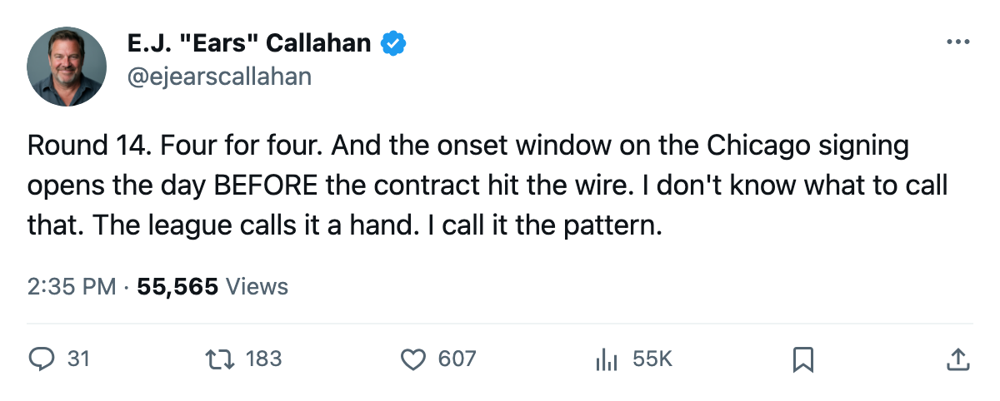
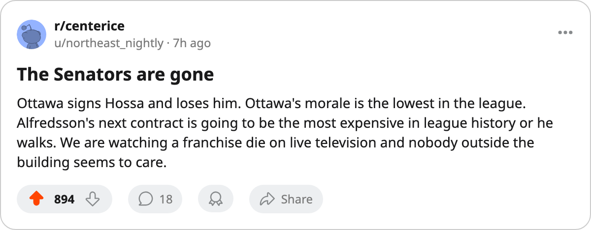

Sign-and-Injure, Round 14: 4 Filed Dec 17-18, 4 on IR. 1 Onset Started Before His Signing.
The pattern's tightest coupling yet: Chicago signed Deron Quint on Dec 18, and the league puts his hand injury onset somewhere between Dec 17 and Dec 19.
 E.J. "Ears" CallahanInsider · The Hot Stove
E.J. "Ears" CallahanInsider · The Hot Stove

4 of 4 signings went on IR; onset window overlaps signing date

Four contracts filed across four clubs on Dec 17 and Dec 18. All four men are on the injured list as of today. The onset windows are what matter.
Deron Quint75 was signed by  Chicago Blackhawks on Dec 18. The league designates his hand injury onset somewhere between Dec 17 and Dec 19. That window opens the day before his name hit the transaction wire. He returns Jan 9.
Chicago Blackhawks on Dec 18. The league designates his hand injury onset somewhere between Dec 17 and Dec 19. That window opens the day before his name hit the transaction wire. He returns Jan 9.
The other three went down Dec 20-22, two to four days after signing.  Ethan Moreau69 (foot, returns Feb 1) landed at
Ethan Moreau69 (foot, returns Feb 1) landed at  Edmonton Oilers on Dec 17.
Edmonton Oilers on Dec 17.  Marian Hossa84 (elbow, returns Jan 14) landed at
Marian Hossa84 (elbow, returns Jan 14) landed at  Ottawa Senators on Dec 17.
Ottawa Senators on Dec 17.  Henrik Tallinder73 (foot, returns Jan 4) landed at
Henrik Tallinder73 (foot, returns Jan 4) landed at  Columbus Blue Jackets on Dec 18.
Columbus Blue Jackets on Dec 18.
Four for four, and the window keeps tightening
Round 13: 7 of 8 hit IR. Round 12: 8 of 9. Round 14: 4 of 4. The hit rate has climbed each round, and now the onset window overlaps the signing date itself. Quint's case is the first where the injury could have been in progress before the contract was filed.
| Player | Club | Signed | Injury | Onset window | Return |
|---|---|---|---|---|---|
| [[player:808\|Deron Quint]] | CHI | Dec 18 | Hand | Dec 17-19 | Jan 9 |
| [[player:679\|Ethan Moreau]] | EDM | Dec 17 | Foot | Dec 20-22 | Feb 1 |
| Marian Hossa | OTT | Dec 17 | Elbow | Dec 20-22 | Jan 14 |
| Henrik Tallinder | CBJ | Dec 18 | Foot | Dec 20-22 | Jan 4 |
Quint at $650,510. Moreau at $146,710. Hossa at $327,870. Tallinder at $307,030. Cheap bodies, filed in the same 48-hour window, at four different clubs. All four landed on the IR within five days.
What the clubs do now
Ottawa Senators sits at the league's lowest club morale (87.4) and now loses Hossa, who carries a 84 overall rating on the contract-year list. The signing was filed at $327,870; the Bureau's Book has him at 84 overall with one year left. The Senators' two best players on expiring deals are  Daniel Alfredsson91 at $11.40M and Hossa. Alfredsson is healthy. Hossa is out until mid-January.
Daniel Alfredsson91 at $11.40M and Hossa. Alfredsson is healthy. Hossa is out until mid-January.
Edmonton Oilers already had  Henrik Zetterberg70? No, Zetterberg is at Detroit. Henrik Zetterberg sits at 76 morale with
Henrik Zetterberg70? No, Zetterberg is at Detroit. Henrik Zetterberg sits at 76 morale with  Detroit Red Wings. Edmonton's room reads 92.7 average, and Moreau at $146,710 was supposed to be depth. He returns Feb 1, which puts him outside any realistic playoff push for a club sitting 3rd in the Northwest at 34 points.
Detroit Red Wings. Edmonton's room reads 92.7 average, and Moreau at $146,710 was supposed to be depth. He returns Feb 1, which puts him outside any realistic playoff push for a club sitting 3rd in the Northwest at 34 points.
Columbus Blue Jackets now carries three men out: Quint's new teammate Tallinder,  Todd Marchant82 (knee, out Jan 30), and contract-year defenseman
Todd Marchant82 (knee, out Jan 30), and contract-year defenseman  Dimitri Kalinin82 (arm, out Jan 8). Columbus has 38 points and sits 3rd in the Central.
Dimitri Kalinin82 (arm, out Jan 8). Columbus has 38 points and sits 3rd in the Central.
Chicago Blackhawks is 2-15 at home, the worst in the league by a full four games. They signed Quint to shore up a blue line and got 0 games from him. Their club morale reads 88.1, second-worst in the league.
The trade deadline is 87 days away. Four clubs just spent money on four men who cannot help them before mid-January at the earliest. The numbers have now run for 14 rounds without a break, and the league record cannot distinguish pattern from coincidence.

